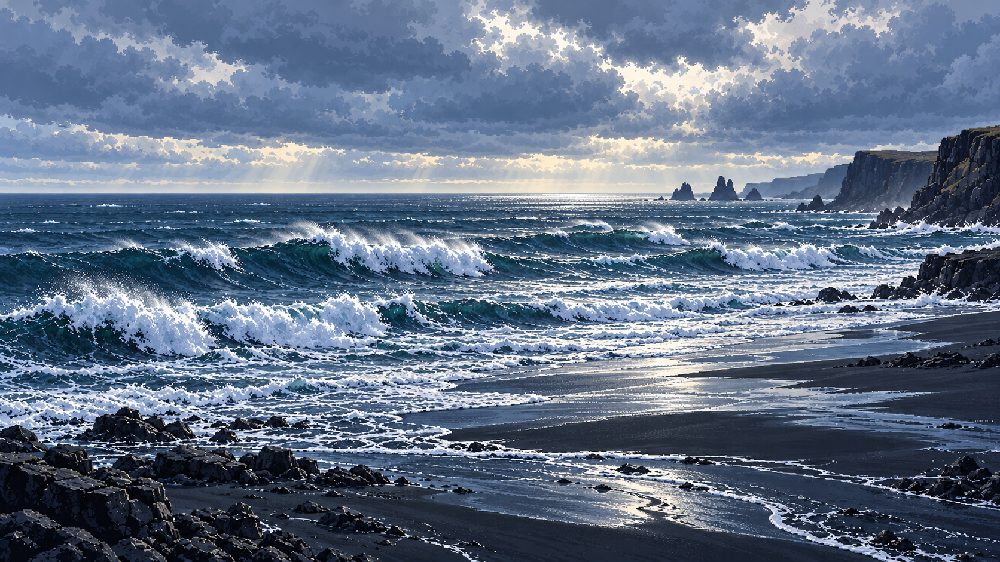

<!doctype html>
<html lang="zh-CN">
<meta charset="utf-8"><meta name="viewport" content="width=device-width, initial-scale=1">
<link rel="icon" href="data:,">
<title>黑沙滩 · 浪体试验</title>
<style>
*{box-sizing:border-box}html,body{margin:0;width:100%;height:100%;overflow:hidden;background:#142631}
#study{position:relative;width:100%;height:100%}#painting,.landscape-layer{position:absolute;inset:0;width:100%;height:100%;object-fit:cover;pointer-events:none}.landscape-layer[hidden]{display:none}
nav{position:fixed;right:24px;bottom:24px;display:flex;gap:9px}button,a{display:grid;place-items:center;width:42px;height:42px;border:1px solid #c9d7df66;border-radius:50%;background:#15232a88;color:#e1e9ed;text-decoration:none;cursor:pointer}button:hover,a:hover{background:#334b58}button:focus-visible,a:focus-visible{outline:2px solid white;outline-offset:4px}button[aria-pressed=true]{background:#708693aa}svg{width:19px;height:19px;fill:none;stroke:currentColor;stroke-width:1.4}
</style>
<main id="study" aria-label="黑沙滩独立浪体试验"></main>
<nav aria-label="试验对照">
<a href="../#reynisfjara" aria-label="返回冰岛主原型"><svg viewBox="0 0 24 24"><path d="m13 5-7 7 7 7M6 12h14"/></svg></a>
<button id="compare" aria-label="显示原画作对照；快捷键 A" aria-pressed="false"><svg viewBox="0 0 24 24"><rect x="4" y="4" width="16" height="16" rx="1"/><path d="M12 4v16M4 16l5-5 3 3m0 1 4-7 4 5"/></svg></button>
<button id="pause" aria-label="暂停；快捷键 P 或空格" aria-pressed="false"><svg viewBox="0 0 24 24"><path d="M9 6v12m6-12v12"/></svg></button>
</nav>
<script type="module" src="study.js"></script>
</html>
